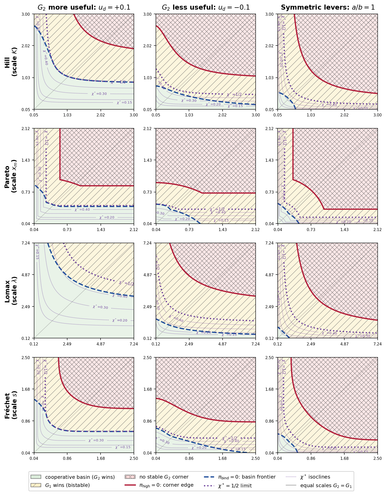

Machine-checks the algebraic and finite-grid backbone of evolutionary game theory adoption theorems in Lean 4.
Abstract
We ask under what conditions an agent with a harm-minimizing policy can displace an approval-seeking (RLHF) agent in a competitive market, and when that policy is sufficient to prevent community harm. We use evolutionary game theory (finite-population Moran-Fermi pairwise comparison) to formalize this subject to assumptions of wisher hindsight, peer testimony, a monotone harm ledger, sufficient information density of community feedback, and a finite, depleting resource pool, in a negative-sum environment. We show that adoption is favored when the prior distributions on how readily wishers attune to community sentiment are monotone, exhibit endpoint inversion, and have a centro-symmetric pairing property, and demonstrate this with several long-tailed priors (Hill, Pareto, Lomax, Frechet). Where it is favored, a critical adoption level separates communities that drift back to the approval-seeking agent from those for which the audited agent fixes; above that level fixation is the overwhelmingly likely outcome. We derive when fixation is attainable as a bound on the effective (informational) size N_c of the community, which must be small enough to allow fixation before depletion. We present these as Theorems 5.4 and 5.5; the algebraic and finite-grid backbone is machine-checked in Lean 4, with the barrier-crossing asymptotics retained as explicit hypotheses. We show that a self-audited agent with a community ledger is not, in general, sufficient to prevent community harm. Sufficiency depends both upon the alignment of the agent's audit with community values and the timeframe over which harm is evaluated. Regardless of alignment, once adoption reaches dominance, the state is absorbing. The same policy that reduced harm under alignment becomes a trap, welfare-negative under misalignment and, even under alignment, one that locks in harm deferred past the adoption horizon.
Problem
Under what conditions can a harm-minimizing (audit-grounded) AI agent displace an RLHF agent in a competitive market, and when is that displacement sufficient to prevent community harm?
Approach
Uses evolutionary game theory (finite-population Moran-Fermi pairwise comparison) in a negative-sum environment with depleting resources. The algebraic and finite-grid backbone is machine-checked in Lean 4, with barrier-crossing asymptotics retained as explicit hypotheses.
Results
Adoption is favored when prior distributions are monotone, exhibit endpoint inversion, and have a centro-symmetric pairing property. A critical adoption level separates drift-back from fixation. Self-audited agents are not sufficient to prevent community harm under misalignment; once adoption reaches dominance, the state is absorbing regardless of alignment.

Figure 2: Cross-prior basin phase diagram over the per-genie scale plane. Rows: the four threshold-prior families of Table ˜ 2 , tail index \alpha=2 , scales over the matched-median range. Columns vary the audit working point (titles); the first two fix a=0.8 , b=0.3 , the third sets a=b=0.8 . Axes: horizontal G_{2} scale, vertical G_{1} scale, in each row’s symbol. All panels fix c_{G_{1}}=c_{G_{